비서-1급 (2019-11-10 기출문제)
1과목: 비서실무
1. 다음 중 비서직에 대한 설명으로 가장 올바른 것은?
- 비서 업무의 범위는 상사의 지위와 업무 위임 정도에 따라 달라진다.
- 모든 조직은 표준화된 비서 직무 기술서(job description)에 따라 비서의 자격, 업무, 권한 등이 명시되어 있다.
- 비서는 경력과 상사의 신임도에 따라 상사의 위임 없이도 업무 의사결정을 할 수 있다.
- 비서는 조직의 업무 절차 및 문서 서식 등을 상사에 맞추어 개선 및 개발하는 등의 창의적 업무 수행이 가능하다.
(정답률: 49%)

2. 다음은 비서들의 자기계발 사례이다. 다음의 사례 중 비서의 자기계발 태도로 가장 적절하지 않은 것은?
- 강진물산의 허비서는 요즘 SNS 영상 업로드에 관심이 많아 퇴근 후 영상편집을 배우러 다니고 있다.
- 한국유통의 이비서는 평생교육원에서 야간에 개설하는 경제수업을 수강하고 있다.
- 두리제과의 금비서는 대학시절 인연으로 멘토가 된 A기업 부장에게 상사에 대한 고민도 얘기하고 상사가 지시한 업무관련 조언도 구한다.
- 제이상사의 오비서는 상사가 진행하고 있는 업무의 파악을 위해 상사에게 보고되는 문서들의 내용을 살펴본다.
(정답률: 64%)
3. 다산제강 대표이사의 비서인 이빛나가 회사에 방문한 손님을 응대하는 태도로 가장 적절한 것은?
- 상사와 선약되지 않은 손님이 방문 시 “잠시 자리에 앉아 계시면 사장님께 안내해 드리겠습니다.”라고 말하며 손님이 상사를 만날 수 있도록 친절히 도왔다.
- 상사와 개인적으로 약속한 손님이 방문한 경우 이를 사전에 알지 못했을 때 손님에게 “죄송합니다. 사장님께서 제게 알려주지 않으셔서 오늘 방문하시는 것을 미처 몰랐습니다.”라고 솔직히 말한다.
- 상사의 대리로 내방객을 응대할 때 상사로부터 지시 받지 못한 부분에 대해 질문을 받자 자신이 알고 있는 모든 지식과 추측을 더하여 손님의 질문에 답하였다.
- 선약된 손님이 방문하였을 때 상사가 먼저 방문한 손님과 면담이 길어지자 약속이 지연될까 염려되어 손님이 기다리고 있다는 내용을 상사에게 메모로 전달하였다.
(정답률: 70%)
4. 다음 중 신입 비서의 행동으로 가장 적절하지 않은 것은?
- 비서실뿐 아니라 일반부서의 직원들과도 좋은 인간관계를 형성하기 위해 노력하였다.
- 상사 두 분이 동시에 업무를 지시할 때는 직급이 높은 상사의 일을 항상 먼저 처리하였다.
- 예약하지 않은 방문객이 회사에 찾아와도 하던 일을 멈추고 친절하게 인사하였다.
- 선배비서가 알려준 업무처리 방식이 학교에서 배운 것과 조금 달랐지만 아직은 회사의 처리방법과 규정을 모르므로 우선은 선배가 알려주는 방법에 따라 일을 처리하였다.
(정답률: 61%)
5. 다음 상황을 읽고 비서의 응대가 적절하지 않은 것을 모두 고르시오.
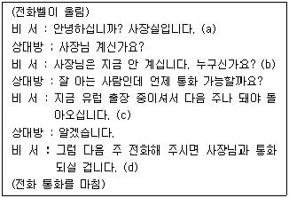
- (a), (b)
- (b), (c)
- (b), (c), (d)
- (a), (b), (c), (d)
(정답률: 57%)
6. 다음은 비서의 전화응대 사례이다. 다음의 사례 중 비서의 응대로 가장 적절한 것은?
- 사장 비서인 엄비서는 상사가 자녀의 졸업식에 참석 후 출근하는 상황에서 가나유통 한전무가 전화하여 상사를 찾자 “사장님은 오늘 외부일정으로 오후 1시쯤 사무실에 도착하실 예정입니다.”라고 하였다.
- 사장 비서인 박비서는 회장이 전화하여 상사와 통화를 원하자 통화 연결 전 “회장님, 어떤 용건으로 전화 하셨다고 전해 드릴까요?”라고 공손하게 여쭈어보았다.
- 사장 비서인 고비서는 전화를 받고 자신이 잘 모르는 이름이었지만 상대방이 상사와 친한 사이라고 이야기하자 미처 몰랐다고 사죄드린 후 바로 상사에게 연결해 드렸다.
- 사장 비서인 최비서는 총무팀으로 연결될 전화가 비서실로 잘못 연결되자 “연결에 착오가 있었나봅니다. 제가 연결해 드리겠습니다.”라고 한 후 전화를 연결했다.
(정답률: 39%)
7. 손비서는 오늘 오전 10시에 업무체결 가능성을 타진하기 위해 회사를 방문할 호주의 ABC Corp.의 Mr. Richard Miller 본부장을 맞이할 준비를 하고 있다. 상사로부터 중요한 방문객이므로 준비를 철저히 하라는 지시를 받은 손비서의 응대준비로 가장 적절한 것은?
- 경비실과 안내실에 미리 전화하여 방문객의 정보를 알려주고 도착 즉시 연락을 부탁하였다.
- 상사와 처음 만나는 분이므로 방문객에 대해 사전 정보를 얻고자 궁금한 점을 정리하여 일주일 전에 여유를 두고 호주 본부장 비서에게 이메일을 보냈다.
- 상사와 함께 회의에 참석할 사내 임원진들에게 10시까지 회의실에 모이도록 사전에 연락해 두었다.
- 회사 소개 및 협력방안 프레젠테이션 자료를 사전에 ABC 회사에 보내 주어 검토를 부탁하였다.
(정답률: 48%)
8. 비서 A는 회장 비서로 3년차이고 비서 B는 사장 비서로 6개월 전에 입사하였다. 둘은 같은 층에서 근무하고 있다. 다음 예시 중 원만한 인간관계를 위한 비서의 행동으로 가장 적절한 것은?
- 비서 A는 비서 B에게 비서라는 직업은 상사와 회사에 관한 보안업무가 많으므로 직장 내 동호회에 가입하지 말라고 조언하였다.
- 비서 B는 A가 입사 선배이고 상사 직위도 높으므로 A의 지시를 따르기로 하였다.
- 비서 업무평가표가 합리적이지 않다고 판단하여 A와 B는 의논하여 시정 건의서를 작성하여 각자의 상사에게 제출하였다.
- 비서 B는 사장을 보좌할 때 애로사항이 많아 입사 선배인 A에게 상사보좌의 노하우를 물어보고 업무 시 적용해 보는 노력을 했다.
(정답률: 66%)
9. 정도건설 양영수 회장은 오늘 저녁 이수상사 김영한 사장과 우진면옥에서 만찬이 예정되어 있다. 그러나 양회장 집에 급한 일이 생겨 만찬을 취소해야 하는 상황이다. 이 경우 양회장 비서의 행동으로 가장 적절한 것은?
- 김영한 사장 비서에게 전화를 걸어 상사의 정보이므로 이유는 말해줄 수 없지만 부득이하게 오늘 약속을 취소해야 한다고 전하였다.
- 김영한 사장 비서에게 전화를 걸어 김영한 사장의 가능한 대체 일정을 먼저 확인하였다.
- 따로 예약금을 지불해 놓은 상황은 아니므로 우진면옥에 예약취소 전화를 하지는 않고 자동취소 되기를 기다렸다.
- 만찬 취소 완료 후 새로운 일정을 기입하고자 이전의 일정을 삭제하였다.
(정답률: 58%)
10. 다음 중 식당 예약업무를 진행하는 비서의 태도로 가장 적절한 것은?
- 이금자 비서는 상사가 요청한 식당으로 4월 15일 오후 6시 예약을 시도하였지만 그 날 자리가 만석으로 예약이 불가하다는 식당측 답변을 들었다. 하지만 포기하지 않고 4월 14일까지 취소자리를 기다리다가 그때도 자리가 없자 상사에게 보고하였다.
- 한영희 비서는 상사가 횟집 '서해마을' 예약을 지시하자 여러 지점 중 상사가 주로 이용하는 '서해마을 일산점'으로 예약을 진행하였다.
- 윤영아 비서는 상사가 지시한 이태리 식당에 예약을 하며 상사의 이름과 비서의 연락처로 예약을 진행하였다.
- 고은정 비서는 상사가 7시 가나호텔 식당 예약을 지시하자 오후 7시 만찬으로 예약을 하였다.
(정답률: 49%)
11. 다음 중 회의 용어를 적절하게 사용하지 못한 것은?
- “오늘 심의할 의안을 말씀드리겠습니다.”
- “김영희 위원님의 동의로 사내 휴게실 리모델링이 의결되었습니다.”
- “이번 안건에 대해서는 표결(票決)로 채결을 하겠습니다.”
- “오늘 안건을 추가로 발의하실 분 계십니까?”
(정답률: 41%)
12. 다음 중 비서의 상사 해외 출장관리 업무로 가장 적절한 것은?
- 휴가철이라 인천공항이 붐비는 관계로 상사 자택과 가까운 도심공항터미널에서 탑승수속을 먼저하고 수하물은 인천공항에서 바로 부칠 수 있게 했다.
- 3주 후 상사의 유럽 출장이 계획되어 있어 비서는 전임비서가 추천한 기업요금(commercial rate)이 적용되는 호텔을 예약하였다.
- 상사가 출장지에서 업무지시를 원활하게 할 수 있도록 스마트기기에 애플리케이션을 설치해 드렸다.
- 6개월 전 미국 출장을 다녀온 상사가 다시 미국으로 출장을 가게 되어 사전입국 승인을 위해 ESTA 작성을 했다.
(정답률: 40%)
13. 다음 달에 미국 샌디에고에 위치한 다국적 기업인 ABC회사와 기술제휴 업무협약식을 가질 예정이다. 이를 위해 ABC회사의 대표이사, 국제교류 이사, 그리고 기술개발 연구팀장 3인이 방문할 예정이다. 우리 회사 측에서는 김영철 사장, 권혁수 상무, 김진표 해외영업 팀장, 이진수 기술개발 팀장 4인이 업무협약식에 참석할 예정이다. 김영철 사장 비서는 협약식장의 좌석을 아래 그림과 같이 배치하였다. 다음 내용 중 가장 잘못된 것은?
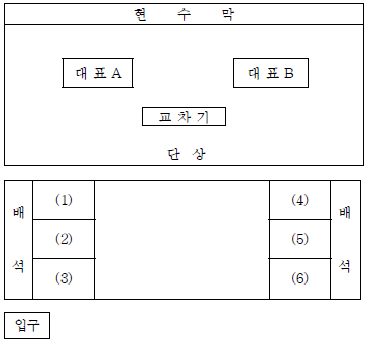
- 단상에 위치한 교차기는 앞에서 볼 때 왼쪽에 태극기가 오도록 한다.
- 단상의 대표 A자리에는 우리 회사의 대표인 김영철 사장이 앉는다.
- 참석자의 기관명, 직함, 이름을 기재한 명패는 참석자 앞에 상대방에게 글자가 보이도록 놓는다.
- 협약서는 참석자 수대로 준비하여 식순과 함께 참석자 앞에 준비해 둔다.
(정답률: 42%)
14. 다음 행사 의전에 대한 설명 중 관례상 서열에 관한 설명으로 가장 적절하지 않은 것은?
- 지위가 비슷한 경우 여자는 남자보다 상위에 위치한다.
- 지위가 비슷한 경우 내국인이 외국인보다 상위에 위치한다.
- 기혼부인 간의 서열은 남편의 직위에 따른다.
- 지위가 비슷한 경우 연장자가 연소자보다 상위에 위치한다.
(정답률: 47%)
15. 다음 중 비서의 공식 만찬 행사 준비로 가장 올바른 것은?
- 만찬의 드레스코드가 'Business suit w/ tie'라 비서는 상사에게 타이를 매지 않아도 된다고 말씀드렸다.
- 부부 모임의 만찬이므로 사각 테이블의 왼쪽에는 남자가, 오른쪽에는 부인들이 앉도록 자리를 배치하였다.
- 만찬 오프닝에는 최근의 정치적 이슈와 관련된 내용이 논의될 수 있도록 간략하게 자료를 준비하였다.
- 만찬 초대장에는 식사 시작 시간을 명시하였다.
(정답률: 47%)
16. 상사가 오전 11시에 비서를 호출하여 갑자기 오늘 제주에 급히 내려갈 일이 생겼으니 항공권을 바로 예매하라는 지시를 하였다. 가능하면 KAL로 예약을 하라고 하였다. 이 지시에 대한 비서의 가장 바람직한 보고는?
- “사장님, 보고 드리기 죄송합니다만 요즘이 휴가철이라 대한 항공의 당일 예매권은 없습니다. 어떻게 할까요?”
- “사장님, 보고 드립니다. KAL은 당일표가 없어서 가장 빨리 갈 수 있는 제주항공편 14시로 일단 예약을 했고, 대한항공편으로 12시 30분 출발하는 비행기가 있어서 대기자 명단에는 올려 두었습니다.”
- “사장님, 송구합니다. 오늘 대한항공 발권은 불가능한데, 죄송합니다만 내일로 일정을 미루실 수는 없으신가요?”
- “사장님, 바로 알아본 결과 원하시는 대한항공편은 오늘 예약이 안되는데 다른 항공사 티켓이 있는지 알아볼까요?”
(정답률: 58%)
17. 다음의 보고서 내용 중 ㉠~㉣의 한자 연결이 올바른 것은?
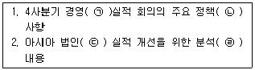
- ㉠經營 - ㉡政策 - ㉢法人 - ㉣分析
- ㉠經營 - ㉡定策 - ㉢法人 - ㉣分石
- ㉠京營 - ㉡定策 - ㉢法印 - ㉣分石
- ㉠京營 - ㉡政策 - ㉢法印 - ㉣分析
(정답률: 37%)
18. 다음 중 상사를 보좌하기 위한 비서의 행동으로 가장 적절하지 않은 것은?
- 상사에게 온 우편물을 중요도와 긴급도에 따라 분류하여 올려드렸다.
- 상사의 일정은 매일 아침 출근하여 그 날의 일일일정표를 작성하였다.
- 상사의 개인 파일에 상사의 사번, 주민등록번호, 운전면허증, 신용카드번호와 각각의 만기일 등을 기록하고 암호화하였다.
- 상사가 참여하고 있는 각 모임의 이름과 구성원들의 이름, 소속, 연락처, 기념일 등을 정리해두었다.
(정답률: 48%)
19. 다음 중 경조사 업무를 처리하는 비서의 태도로 가장 바람직 하지 않은 것은?
- 경조사가 발생하면 화환이나 부조금을 준비하는 데 회사의 경조 규정을 참고한다.
- 신문의 인물 동정 관련 기사를 매일 빠짐없이 확인하고, 사내 게시판 등에 올라오는 경조사도 확인한다.
- 경조사가 발생했을 경우에는 시기가 중요하므로 비서가 먼저 처리한 후 추후 상사에게 보고한다.
- 평소 화원이나 꽃집을 한두 곳 선정해두고 경조사 발생 시 전화나 인터넷을 통하여 주문한다.
(정답률: 67%)
20. 다음은 사내 이메일로 구성원들에게 전송할 상사 모친상의 조문답례글을 비서가 작성한 것이다. 잘못된 한자어로만 묶인 것은?
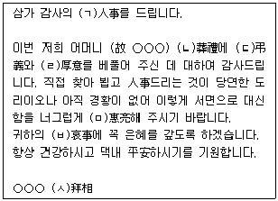
- ㄱ, ㄴ, ㄷ
- ㄴ, ㄷ, ㄹ
- ㄷ, ㄹ, ㅁ
- ㅁ, ㅂ, ㅅ
(정답률: 26%)
2과목: 경영일반
21. 다음 중 기업의 사회적 책임 범위에 대한 설명으로 가장 적절하지 않은 것은?
- 기업은 이해관계자 집단 간의 이해충돌로 발생하는 문제해결을 위한 이해조정의 책임이 있다.
- 정부에 대해 조세납부, 탈세 금지 등 기업의 영리활동에 따른 의무를 갖는다.
- 기업은 자원보존의 문제나 공해문제에 대한 사회적 책임을 갖는다.
- 기업은 이윤 창출을 통해 주주의 자산을 보호하고 증식시켜줄 의무는 갖지 않는다.
(정답률: 60%)
22. 다음은 기업 형태에 대한 설명이다. ( )안에 알맞은 말로 올바르게 짝지은 것은?
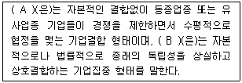
- A - 콘체른, B - 지주회사
- A - 카르텔, B - 트러스트
- A - 지주회사, B - 콤비나트
- A - 트러스트, B - 콘체른
(정답률: 50%)
23. 이사회는 주식회사의 제도적 기관으로 필요상설기관이다. 다음 중 이사회의 결의만으로 효력을 가질 수 없는 내용으로, 이사회가 집행할 수 있는 업무 권한으로 보기에 가장 적절하지 않은 것은?
- 대표이사의 선임
- 감사의 선임
- 주주총회의 소집
- 사채발행의 결정
(정답률: 31%)
24. 다음은 기업을 둘러싸고 있는 경영환경의 예이다. 그 속성이 다른 것은?
- 시장의 이자율, 물가, 환율에의 변동
- 새로운 기술 개발 및 기술 혁신
- 노동조합 설립
- 공정거래법, 노동법, 독과점 규제법 강화
(정답률: 45%)
25. 다음은 대기업과 비교하여 중소기업의 필요성 및 특징을 설명한 것이다. 이 중에서 가장 거리가 먼 것은?
- 시장의 수요변동이나 환경변화에 탄력적으로 대응하기 어렵지만 효율적인 경영이 가능하다.
- 기업의 신용도가 낮아 자본조달과 판매활동에 불리하여 대기업의 지배에 들어가기 쉽다.
- 악기나 도자기, 보석세공 같이 소비자가 요구하는 업종으로 대량생산에 부적당한 업종도 있기 때문이다.
- 가발제조업과 같이 대규모 시설투자는 필요하지 않고 독특한 기술이나 숙련된 수공을 요하는 업종이 존재하기 때문이다.
(정답률: 45%)
26. 다음 중 공동기업의 기업형태에 대한 설명으로 옳은 것은?
- 합자회사는 2인 이상의 무한책임사원이 공동출자하여 정관을 법원에 등기함으로써 설립되는 기업형태이다.
- 합명회사는 출자만 하는 유한책임사원과 출자와 경영을 모두 참여하는 무한책임사원으로 구성된 기업형태이다.
- 익명조합은 조합에 출자를 하고 경영에 참여하는 무한책임 영업자와 출자만 하고 경영에는 참여하지 않는 유한책임사원의 익명조합원으로 구성되는 기업형태이다.
- 주식회사는 2인 이상 50인 이하의 사원이 출자액을 한도로 하여 기업채무에 유한책임을 지는 전원 유한책임사원으로 조직되는 기업형태이다.
(정답률: 31%)
27. 다음의 기업 사례들은 무엇으로부터 비롯된 것인지, 보기 중 가장 적합한 것은?
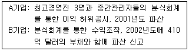
- 조직의 창업주 및 경영이념
- 조직 규범 및 문화
- 경영자의 도덕적 해이
- 조직의 사업 및 회계범위의 확장
(정답률: 57%)
28. 다음 중 최고경영자 계층의 유형과 역할에 대한 설명으로 가장 거리가 먼 것은?
- 최고경영자 계층은 수탁관리층, 전반관리층, 부문관리층 등으로 나눌 수 있으며 이중 부문관리층은 대개 이사로 선임되어있는 각 사업부문의 장을 의미한다.
- 최고경영자 계층은 조직 전체와 관련된 총괄적이고 종합적인 의사결정을 행한다.
- 공장건설, 신제품개발, 기술도입, 기업의 인수과 같은 전략적인 의사결정 문제를 주로 한다.
- 불확실하고 대개 반복적인 경영전략 수립 등 장래의 정형적인 업무의 의사결정을 주로 한다.
(정답률: 47%)
29. SWOT분석은 기업의 전략적 계획수립에 빈번히 사용하는 기법이다. 다음 A반도체의 SWOT분석 내용 중 O에 해당하지 않는 것은?
- 브랜드 신뢰도 확보 및 반도체 시장점유율 확대
- 미국과 중국의 반도체 수요 증가
- 4차 산업혁명에 따른 메모리 반도체 수요 증가
- 반도체 산업의 활황세
(정답률: 41%)
30. 다음 중 조직문화의 구성요소인 7S에 대한 설명으로 가장 적절한 것은?
- 기업의 구조(Structure)는 기업의 컴퓨터 및 기계장치 등 물리적 하드웨어를 의미한다.
- 공유가치(Shared Value)는 구성원을 이끌어 가는 전반적인 조직관리 형태로 경영 관리제도와 절차를 포함한다.
- 구성원(Staff)은 기업의 인력구성, 능력, 전문성, 구성원의 행동패턴 등을 포함한다.
- 전략(Strategy)은 기업의 단기적 방향에 따라 실행하는 비공식적인 방법이나 절차를 의미한다.
(정답률: 43%)
31. 다음 중 리더가 갖는 권력에 대한 설명으로 옳은 것은?
- 준거적 권력과 강제적 권력은 공식적 권력의 예이다.
- 합법적 권력은 부하직원들의 봉급인상, 보너스, 승진 등에 영향력을 미치는 리더의 권력이다.
- 전문가 권력은 부하직원의 상사에 대한 만족도에 긍정적 영향을 미친다.
- 보상적 권력은 부하직원의 직무수행에 부정적 영향을 미친다.
(정답률: 32%)
32. 다음 중 허즈버그의 2요인 이론에 대한 설명으로 가장 적합한 것은?
- 만족과 불만족을 동일한 개념의 양극으로 보지 않고 두 개의 독립된 개념으로 본다.
- 작업환경, 관리자의 자질, 회사정책은 동기요인에 속한다.
- 위생요인을 충족시켜주면 직무만족도가 증가하고 결핍되면 직무불만족에 빠지게 된다.
- 경영자는 종업원의 직무동기를 유발하기 위해서는 종업원의 급여나 대인관계와 같은 동기요인에 관심을 기울여야 한다.
(정답률: 31%)
33. 아래의 사례를 설명하기에 가장 적합한 경제용어는?
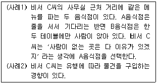
- 백로효과
- 밴드왜건효과
- 베블런효과
- 분수효과
(정답률: 42%)
34. 다음 중 기업의 복리후생제도에 대한 설명으로 가장 적합하지 않은 것은?
- 법정복리후생은 법률에 의해 실시가 의무화되며 종류에 따라 기업이 전액을 부담하거나 기업과 종업원이 공동으로 부담하기도 한다.
- 법정복리후생에는 건강보험, 연금보험, 산업재해보상보험, 고용보험이 있다.
- 법정외복리후생은 기업이 자율적으로 또는 노동조합과의 교섭에 의해 실행한다.
- 복리후생은 기본급, 수당 등의 노동에 대한 금전적 보상뿐만 아니라 비금전적 보상도 포함한다.
(정답률: 28%)
35. IT기술과 자동화시스템이 기업 전반에 영향을 미치면서 과거에는 없었던 컴퓨터 및 정보 관련 문제가 대두되었다. 이에 기업은 전산침해나 정보유출로부터 안전을 유지하기 위한 다양한 대책을 마련하고 있는데, 이 중 적절한 대책으로 가장 거리가 먼 것은?
- 방화벽 설치
- 인증시스템 도입
- 개인 USB 사용 금지
- 패스워드 격년별 정기교체
(정답률: 36%)
36. 다음 보기의 내용은 마케팅 전략 중 무엇을 설명하는 것인가?
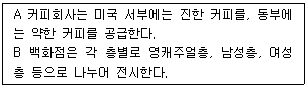
- 포지셔닝(positioning)
- 시장세분화(segmenting)
- 표적시장(targeting)
- 통합화(integrating)
(정답률: 40%)
37. 단체교섭에 대한 설명으로 옳지 않은 것은?
- 노동조합이 없는 회사에서는 노사교섭의 수단이 전혀 없다.
- 근로자 단체교섭권은 헌법에 명시된 노동3권 중 하나이다.
- 근로자가 노동조합을 통하여 사용자와 교섭을 벌여야만 단체교섭이다.
- 단체교섭에서 결정된 사항이 작성된 규정문서를 단체협약서라고 한다.
(정답률: 48%)
38. A기업의 자본총계는 1억 6천만 원이고 부채총계는 4천만 원이다. 이때 A기업의 자산총계와 부채비율은 각각 얼마인가?
- 자산총계 - 1억 2천만 원이며, 부채비율 - 20%
- 자산총계 – 1억 6천만 원이며, 부채비율 - 400%
- 자산총계 – 2억 원이며, 부채비율 - 25%
- 자산총계 – 2억 4천만 원이며, 부채비율 - 17%
(정답률: 48%)
39. 제조 설비를 가지지 않은 유통 전문업체가 개발한 상표로, 유통전문업체가 스스로 독자적인 상품을 기획한 후, 생산만 제조업체에게 의뢰하여 제조된 제품을 무엇이라 하는가?
- NB 제품(National Brand)
- PB 제품(Private Brand)
- OB 제품(Objective Brand)
- IB 제품(International Brand)
(정답률: 46%)
40. 다음 중 기업의 자금조달 방식에 대한 설명으로 가장 적합하지 않은 것은?
- 주식은 주식회사의 자본을 이루는 단위로 주주의 권리와 의무를 나타내는 증권이다.
- 회사채는 기업이 일정기간 후 정해진 액면금액과 일정한 이자를 지급할 것을 약속하는 증서를 말한다.
- 직접금융은 기업의 장기설비 투자를 위한 자금 조달에 용이하다.
- 간접금융은 자금의 공급자와 수요자 사이에 정부가 신용을 보증하는 방식으로 주식, 채권 등을 통해 이루어진다.
(정답률: 28%)
3과목: 사무영어
41. Choose one that does NOT match each other.
- AKA : Also knows as
- ISP : Internet Service Product
- ROI : Return on Investment
- BOE : Board of Executives
(정답률: 27%)
42. Choose one that does NOT match each other.
- Branch is one of the offices, shops, or groups which are located in different places.
- Personnel department is responsible for hiring employees and interviewing with candidates.
- Marketing department talks to clients and persuades them to buy products.
- Accounting department organizes financial aspects of business.
(정답률: 32%)
43. Which English sentence is grammatically LEAST correct?
- 경제 성장률이 현재 4%에 머무르고 있다.
→ Economic growth now stands at 4 percent. - 우리는 3년간 흑자입니다.
→ We have been in the red for three years. - 올해 순이익은 3천 4백만 달러에 달했다.
→ Net income of this year was $34 million. - 파업으로 우리의 매출이 급감했다.
→ Our profits fell sharply because of strikes.
(정답률: 37%)
44. Which is a LEAST proper English expression?
- 주문하신 제품을 배송하였음을 알려드립니다. This is to let you know that we've shipped your order.
- 저는 품질 보증부의 Jack Owen입니다. My name is Jack Owen in the Warranty Department.
- 저희 로스엔젤레스 지사의 부장, Michael Hong께서 귀하의 존함을 알려주셨습니다. I was given by your name of the Director Michael Hong for our Los Angeles office.
- 제가 도와드릴 수 있는 일이 또 있으면 연락 주십시오. If there's anything else I can help you, please let me know.
(정답률: 35%)
45. Which of the followings is the MOST appropriate order?
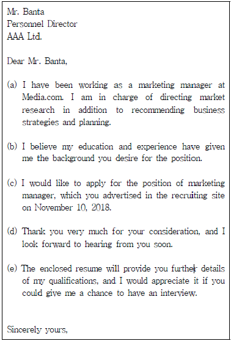
- (c)-(b)-(a)-(e)-(d)
- (b)-(c)-(e)-(a)-(d)
- (c)-(d)-(b)-(e)-(a)
- (b)-(e)-(c)-(d)-(a)
(정답률: 48%)
46. According to the following text, which one is NOT true?
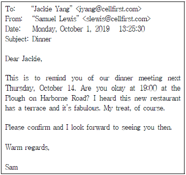
- Plough restaurant has a good condition for dinner.
- It was sent via e-mail.
- Jackie will be serving meals to Samuel.
- Dinner was promised in advance.
(정답률: 44%)
47. Which is NOT correct about this?
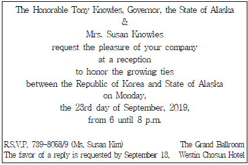
- This is the invitation letter to a reception.
- The letter specifies the time, date and venue to invite.
- The receiver of this letter should notify of the attendance.
- Tony Knowles and Mrs. Susan Knowles are the receivers of the letter.
(정답률: 32%)
48. What is MOST proper in the blank?
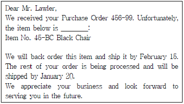
- in stock
- ready
- not in stock
- packed
(정답률: 44%)
49. Which of the following is a LEAST appropriate expression when closing a meeting?
- Thank you for coming and for your contributions.
- Let's call it a day.
- Would you like to start with the first point?
- I declare this meeting adjourned.
(정답률: 38%)
50. What is the MOST appropriate answer in the conversation?
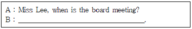
- It's scheduled of the 9th, Friday within 1:00 p.m.
- It's scheduling in Friday the 9th, in 1:00 p.m.
- It's scheduling on 1:00 p.m. Friday the 9th.
- It's scheduled on the 9th, Friday at 1:00 p.m.
(정답률: 47%)
51. Which is LEAST correct according to the following?
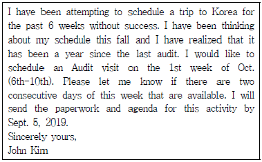
- John could not visit Korea for the last six weeks.
- John is planning to visit Korea.
- The recent audit was done last year.
- John would like to do the audit only on Oct. 6th and 10th.
(정답률: 30%)
52. According to the following dialogue, which one is NOT true?
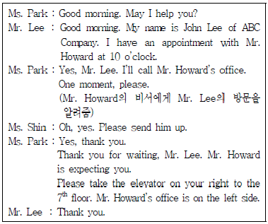
- Ms. Shin is a secretary of Mr. Howard.
- Ms. Park's occupation is receptionist.
- Mr. Lee made an appointment in advance and visited Mr. Howard.
- Ms. Park and Ms. Shin are on the same floor.
(정답률: 42%)
53. What are the BEST expressions for the blank ⓐ and ⓑ?
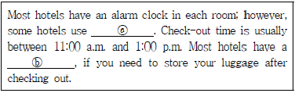
- ⓐ get up calls, ⓑ baggage claim area
- ⓐ morning calls, ⓑ luggage allowance
- ⓐ give up calls, ⓑ laundry service
- ⓐ wake up calls, ⓑ luggage storage room
(정답률: 37%)
54. What are the BEST expressions for the blank ⓐ and ⓑ?
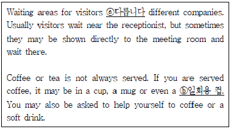
- ⓐ differ on, ⓑ recycled cup
- ⓐ varies on, ⓑ tumbler
- ⓐ vary in, ⓑ disposable cup
- ⓐ have various, ⓑ paper cup
(정답률: 35%)
55. Which is CORRECT according to the phone conversation?
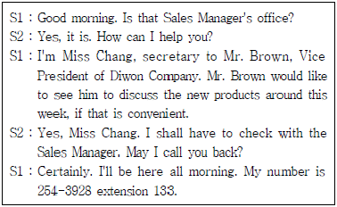
- Mr. Brown himself called first.
- Sales manager called the Vice President.
- Vice President had an appointment to meet the Sales Manager this afternoon.
- Secretary of Sales Manager will call back to Miss Chang.
(정답률: 43%)
56. What is the BEST sentence for the blank?
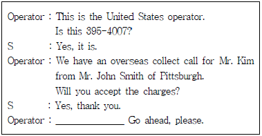
- How much do you charge?
- Your party is on the line.
- Put him through.
- Who do you want to speak to?
(정답률: 27%)
57. Belows are sets of phone conversation. Choose one that does NOT match correctly each other.
- A : I'll be waiting, but be sure to call me, will you?
B : Sure thing. But it may take a while. - A : We've been out of touch lately, so I thought I'd give you a call.
B : Thanks. Let's have a drink one of these days. - A : Can you tell me how to get there from the hotel?
B : If you have any question, feel free to call. - A : Can I pick you up in front of your house at 9 o'clock?
B : Thank you. Please do.
(정답률: 39%)
58. Which is LEAST correctly inferred about the schedule?
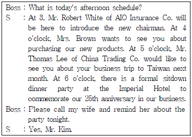
- The schedule of Mr. Kim is occupied this afternoon.
- Mr. Kim is supposed to be introduced a new chairman at 3 p.m.
- Mr. Kim's wife is supposed to attend the dinner party.
- Casual clothes are appropriate for dinner party.
(정답률: 35%)
59. Which is LEAST correct about Mr. Kim's itinerary?
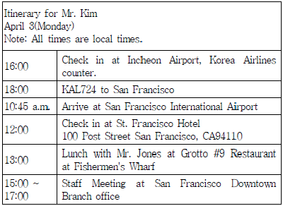
- Mr. Kim will have lunch with Mr. Jones in USA.
- The destination of Mr. Kim's flight is San Francisco.
- Mr. Kim will attend staff meeting in the afternoon at San Francisco.
- At 14:00 of local time in San Francisco, he is in flight.
(정답률: 41%)
60. Which of the following is CORRECT?
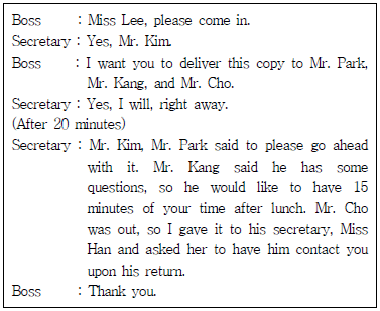
- Mr. Park rejected the suggestions of Mr. Kim.
- Mr. Kang wants to meet Mr. Kim in the morning.
- Miss Han is going to contact Mr. Kim.
- Mr. Cho will get in touch with Mr. Kim when he gets in.
(정답률: 26%)
4과목: 사무정보관리
61. 다음은 공문서의 두문과 결문이다. 이 문서에 관한 설명으로 올바른 것은?
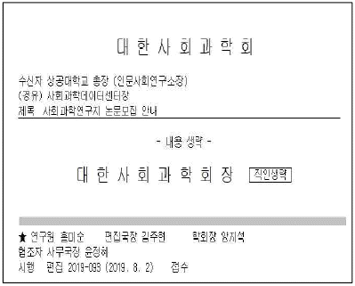
- 대한사회과학회에서 상공대학교 사회과학데이터센터로 발송되는 문서이다.
- 홍미순 연구원이 기안해서 김주현 국장의 검토를 거쳐서 양지석 학회장이 결재한 후 윤정혜 사무국장에게 협조 받은 문서이다.
- 이 문서는 사회과학데이터센터의 사무국에서 발송되었다.
- 이 문서를 최종적으로 받는 사람은 상공대학교 인문사회 연구소장이다.
(정답률: 41%)
62. 다음 중 우편제도를 가장 부적절하게 사용한 경우는?
- 김비서는 상사의 지시로 결혼식장으로 바로 경조금을 보내기 위해 통화등기를 이용하였다.
- 배비서는 50만원 상당의 백화점 상품권을 전달하기 위해서 유가증권등기를 이용하였다.
- 안비서는 미납금 변제 최고장 발송을 위해 내용증명을 이용하였다.
- 신비서는 인터넷으로 작성한 내용을 우편으로 발송하기 위해 e-그린우편을 이용하였다.
(정답률: 30%)
63. 상공건설에 근무하는 김비서가 아래와 같이 문서 수발신 업무를 처리하고 있다. 다음 중 바람직하지 않은 것끼리 묶인 것은?
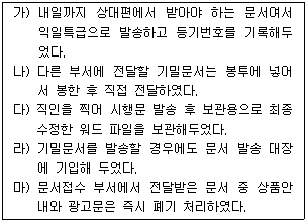
- 가), 라)
- 나), 다)
- 다), 마)
- 라), 마)
(정답률: 32%)
64. 아래 감사장 내용과 작성에 관련한 설명이 가장 적절하지 않은 것은?
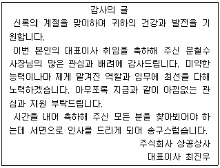
- 대표이사 취임을 축하해준 문철수 사장에 대한 감사인사를 하기 위해 작성한 것이다.
- 많은 사람에게 동일한 내용을 발송하는 경우 수신자의 이름과 직책은 메일머지를 사용하면 편리하다.
- 축하해 주신 분을 직접 찾아뵙고 감사인사를 드릴 예정임을 미리 알리는 서신이다.
- 취임에 대한 축하를 받은 후에 일주일 이내에 작성해서 발송하는 것이 좋다.
(정답률: 50%)
65. 다음 외국인의 명함을 알파벳 순으로 정렬하려고 한다. 순서가 맞는 것은?
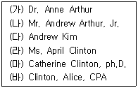
- (나) - (다) - (가) - (라) - (마) - (바)
- (나) - (가) - (바) - (라) - (마) - (다)
- (다) - (마) - (바) - (가) - (나) - (라)
- (바) - (나) - (가) - (라) - (마) - (다)
(정답률: 27%)
66. 다음 보기 중에서 문서유형 구분이 동일한 것끼리 묶인 것은?
- 사내문서, 사문서
- 접수문서, 배포문서
- 대외문서, 폐기문서
- 공람문서, 의례문서
(정답률: 26%)
67. 다음 중 전자결재 및 전자문서에 관한 설명으로 가장 적절하지 않은 것은?
- 전자결재를 할 때에는 전자문서 서명이나 전자이미지 서명 등을 할 수 있다.
- 전자문서 장기 보관 관리를 위한 국제표준 포맷은 EPUB이다.
- 전자결재는 미리 설정된 결재라인에 따라 자동으로 결재파일을 다음결재자에 넘겨준다.
- 전자결재는 기본적으로 EDI 시스템 하에서 이루어지는 것이다.
(정답률: 38%)
68. 마케팅 이사의 비서로서 상사 및 회사의 소셜미디어 관리를 지원하고 있다. 소셜미디어 관리에 관한 사항으로 가장 적절하지 않은 것은?
- 소셜미디어에 올라온 우리회사 및 상사와 관련한 정보에 대해 항상 유의한다.
- 우리회사 SNS의 주요 게시물 및 고객의 반응에 대해 모니터링한다.
- 경쟁사의 소셜미디어 게시물 및 고객 반응에 대해서 모니터링한다.
- 사용자 수가 감소세에 있는 매체보다는 최근에 사용자 수가 증가하고 있는 매체 중심으로 내용을 업데이트한다.
(정답률: 41%)
69. 인터넷을 통해서 정보를 찾고 있다. 다음 중 가장 적절하지 않은 방법은?
- 잘 모르는 시사경제용어가 있어서 네이버 지식백과사전을 활용하여 내용을 확인했다.
- 한국공항공사 홈페이지에서 항공기 이착륙 정보를 확인하였다.
- 경쟁회사의 소액주주명단 확인을 위해서 전자공시시스템에서 검색하였다.
- 국가직무능력표준에 입각한 채용을 위하여 NCS홈페이지에서 직무정보를 확인하였다.
(정답률: 36%)
70. 다음 신문기사를 통해서 알 수 있는 내용으로 가장 적절하지 않은 것은?
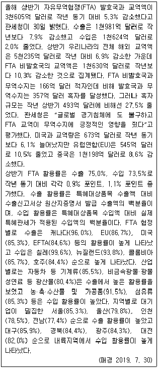
- 우리나라의 상반기 해외 교역액이 작년 대비 감소했다.
- FTA 비발효국과는 수출액이 수입액보다 많다.
- FTA 발효국과는 수출액이 수입액보다 많다.
- 서울의 FTA 수출활용률이 다른 지역보다 높다.
(정답률: 38%)
71. 컴퓨터를 이용하여 정보관리를 하고 있다. 다음 중 가장 적절하지 않은 사항은?
- 김비서는 사용이 익숙한 윈도우즈 XP가 설치된 컴퓨터를 사용한다.
- 정비서는 사용 중인 PC의 IP주소를 확인하기 위해서 IPCONFIG 명령어를 사용하였다.
- 박비서는 컴퓨터 보안을 위해서 CMOS에 비밀번호를 지정해 두었다.
- 한비서는 백신 프로그램을 주기적으로 업데이트하고 실시간 감시를 켜두었다.
(정답률: 40%)
72. 다음 중 사무정보기기 사용이 가장 올바르지 않은 것은?
- 자동공급투입구(ADF)를 이용해 스캔하기 위해 스캔할 면을 아래로 향하게 놓았다.
- 라벨프린터를 이용하여 바코드를 출력하였다.
- NFC기능 프린터를 이용하여 스마트폰의 문서를 출력하였다.
- USB를 인식하는 복합기를 사용해서 USB저장매체에 저장된 문서를 바로 출력했다.
(정답률: 36%)
73. 상공홀딩스 대표이사 비서로 일하고 있는 지우정 비서는 상사의 명함 및 내방객 관리 데이터베이스를 MS-Access 프로그램을 이용하여 업무에 활용하고 있다. 다음 중 관리 및 활용이 잘못된 것은?
- 명함스캐너를 이용하여 수집된 데이터를 테이블로 내보내기 하여 저장하였다.
- 연하장 봉투에 붙일 주소를 출력하기 위해서 페이지 기능을 활용하였다.
- 명함 내용과 방문현황을 화면상에서 한눈에 보기 위해서 하위 폼 기능을 이용하였다.
- 월별 내방객 수를 계산하여 데이터시트 형태로 보기 위해서 쿼리를 이용하였다.
(정답률: 30%)
74. 최근 정보검색과 관련된 추세로서 가장 적절하지 않은 것은?
- 검색 플랫폼의 축소로 동영상 검색의 신뢰도 저하
- 모바일 중심 이용자 맥락을 반영한 검색 방식 및 편의성 개선
- 인공지능 및 딥러닝 등 다양한 기술과의 접목
- 검색 디바이스의 확장으로 인공지능 스피커를 활용한 검색
(정답률: 52%)
75. 다음 중 전자결재 시스템의 특징에 관한 설명으로 옳지 않은 것을 모두 고르시오.
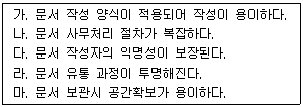
- 가, 나
- 나, 다
- 나, 다, 라
- 나, 다, 라, 마
(정답률: 43%)
76. 상사의 업무를 효율적으로 지원하기 위해 문서작성 업무를 아래와 같이 수행하고 있다. 이 중 가장 적절하지 않은 경우는?
- 정비서는 상사를 대신하여 인사장을 작성하면서 상사가 평소 자주 사용하는 표현을 활용하여 작성하였다.
- 황비서는 상사에게 제출할 업무보고서를 작성하면서 한 페이지에 내용이 모두 들어가도록 글자크기를 작게 줄였다.
- 최비서는 문서를 전달해야 할 시기가 촉박하므로, 가장 적당한 전달방법을 고려하면서 작성하였다.
- 윤비서는 결론적인 메시지가 눈에 잘 띄도록 하였고, 전달할 메시지는 분명하고 간결하게 표현하였다.
(정답률: 49%)
77. 상사를 위해 프레젠테이션 자료를 준비 중에 있다. 일련의 단계를 통해 여러 개의 혼란스러운 내용이 통합된 목표 또는 내용으로 이어질 수 있는지를 보여 주기에 가장 적절한 스마트 아트는?
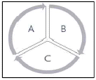
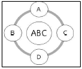
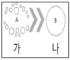
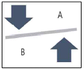
(정답률: 35%)
78. 대한기업 대표이사 비서는 회의자료 작성을 위해서 다음의 자료를 챠트화 하려고 한다. 각 자료에 가장 적합한 그래프의 유형으로 순서대로 표시된 것은?
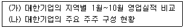
- (가) 분산형 그래프 - (나) 선그래프
- (가) 가로막대 그래프 - (나) 100% 누적 막대그래프
- (가) 다중 선그래프 - (나) 도넛형 그래프
- (가) 누적 막대그래프 – (나) 원그래프
(정답률: 25%)
79. 다음 중 문장부호 사용법이 잘못된 것은?
- “어디 나하고 한번....” 하고 민수가 나섰다.
- 광역시: 광주, 대구, 대전, …
- 날짜: 2019. 10. 9.
- 상사는 “지금 바로 출발하자.”라고 말하며 서둘러 나갔다.
(정답률: 31%)
80. 다음 중 결재 받은 공문서의 내용을 일부 삭제 또는 수정할 때의 처리 중 가장 부적절한 내용은?
- 문서의 일부분을 삭제 또는 수정하는 경우, 수정하는 글자의 중앙에 가로로 두 선을 그어 삭제 또는 수정한 후 삭제 또는 수정한 자가 그 곳에 서명 또는 날인한다.
- 원칙은 결재 받은 문서의 일부분을 삭제하거나 수정할 때에는 수정한 내용대로 재작성하여 결재를 받아 시행하여야 한다.
- 시행문 내용을 삭제하는 경우, 삭제하는 글자의 중앙에 가로로 두 선을 그어 삭제한 후 그 줄의 오른쪽 여백에 삭제한 글자 수를 표시하고 관인으로 날인한다.
- 문서의 중요한 내용을 삭제 또는 수정한 때에는 문서의 왼쪽 여백에 수정한 글자 수를 표시하고 서명 또는 날인 한다.
(정답률: 27%)